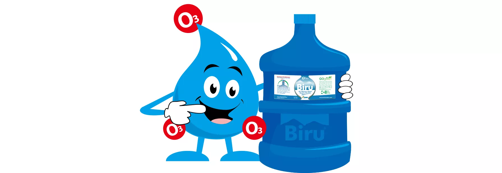

Berawal di tahun 2002 dengan satu gerai Biru milik sendiri di kota Surabaya, dan pilot project franchise Biru di tahun 2003 di kota Jakarta. Dan setelah merealisasikan tujuh gerai Biru yang telah terbukti sukses, Franchise Depo Air Minum Biru ditawarkan kepada publik secara resmi di bulan Oktober-November 2006 dibawah bendera PT. Biru Semesta Abadi sebagai organisasi Pemberi Waralaba. Mengusung Visi Biru yaitu “Tumbuh Memimpin Pasar Air Minum Isi Ulang Melalui Penerapan Prinsip-prinsip Bisnis dan Kemanusiaan yang Benar”, Franchise Biru melakukan langkah monumental sebagai yang pertama menawarkan format franchise di usaha depo air minum di Indonesia (Rekor Muri 2007). Dengan mengedepankan keunggulannya dalam penguasaan 100%-Teknologi-Ozon yang otentik (Rekor Muri 2007) yang menjamin kualitas teknis dari air minum produksinya, dan disertai bukti-bukti keberhasilan usaha yang nyata, Franchise Biru terus tumbuh berkembang. Di bulan Agustus 2020, jaringan waralaba Biru berhasil menembus batas bench-mark 500 gerai Biru, yang tersebar di 9 propinsi dan 36 kota di Indonesia. Di tahun 2019, Franchise Biru mencanangkan program 10-Tahun-Percepatan-Pertumbuhan pengembangan jaringan Depo Air Minum Biru untuk mencapai target 2500 Gerai Biru di tahun 2028. Program percepatan pertumbuhan ini ditujukan untuk membangun momentum percepatan sukses bagi semua Penerima Waralaba Biru. Diharapkan melalui percepatan sukses tersebut, Penerima Waralaba Biru dapat menikmati sukses yang lebih awal dan menikmatinya dalam kurun waktu yang lebih lama selama hidupnya. Program percepatan pertumbuhan ini mendapatkan tantangan yang nyata di semester pertama di tahun 2020, yaitu dengan terjadinya pandemi Covid-19 yang berkepanjangan. Menjelang semester kedua di tahun 2020, geliat percepatan pertumbuhan Biru semakin menguat dan nyata. Hal ini menunjukkan bahwa usaha Depo Air Minum Biru adalah usaha yang Anti-Krisis, yaitu usaha yang dapat bertahan terhadap krisis yang melanda.

Dia – Mr. OTRI – dipanggil demikian, karena adanya tiga bola merah O3 di sekitar tubuhnya. Bola-bola merah O3 itu bisa menempel tetapi juga bisa terlepas dari tubuhnya untuk sementara waktu, tetapi akan kembali menempel ke tubuhnya pada akhirnya. Hal ini menjadi salah satu pesona uniknya. Pesona lainnya ada di matanya. Matanya yang berbicara, yang menunjukkan kecerdasan, ketulusan, dan sekaligus keramahannya. Dia adalah sosok pemberani dalam menghadapi tantangan. Didukung oleh kecerdasannya, seringkali dia mengubah tantangan menjadi momen pembelajaran yang orisinal, yang bermanfaat bagi orang banyak. Dia tidak takut bereksperimen dalam penampilannya. Terkadang dia bahkan dia bisa menjadi sosok yang demikian beda. Dan bila orang kaget melihatnya, dia hanya tertawa lebar karena efek jenakanya yang mengena. Walau terlihat santai, dia adalah sosok yang teguh dalam prinsip bila menyangkut kesehatan. Karenanya dia rajin berolah raga dan makan makanan dan minuman yang sehat. Banyak minum air putih adalah rahasia kebugaran yang selalu dinasihatkannya kepada setiap orang. Dia mudah berteman dengan siapa saja. Tetapi untuk menjadi teman baik, dia memilih orang-orang yang cocok, yang bisa menjadikannya lebih maju dan menikmati kehidupannya yang energik dan dinamis. Hal lain yang menonjol darinya adalah kebaikan hatinya. Dia selalu ada di saat temannya membutuhkan bantuan. Hatinya yang lembut mudah tergerak untuk menolong orang lain yang dalam kesusahan. Dan untuk itu dia bisa menggalang bantuan dari teman-temannya yang sangat banyak. Nah.. tentang seni, dia punya selera yang unik. Satu yang sering dikatakannya tentang keindahan sebuah karya seni adalah bila bisa berguna dan dipakai dalam kehidupan sehari-hari. Memang, barang sehari-hari yang dimiliki dan dipakainya terlihat berbeda dan berseni.